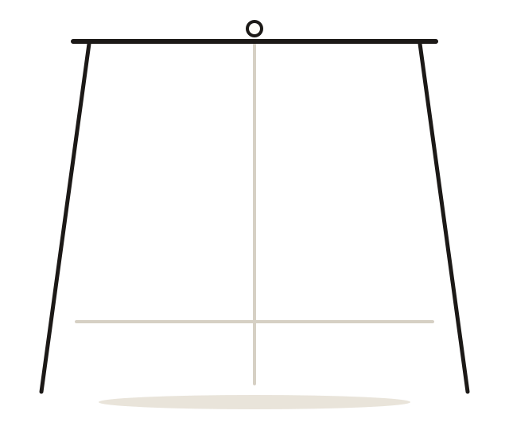

桌面版社媒运营工作台
让 AI 技能，把选题变成可以发布的内容。
Easel-dsh 基于 DeepSeek Harness 构建：账号、选题、热点、日历、拆解与发布在同一个桌面工作台里完成。

直链与校验和
下载后可用 sha256sum 或 Get-FileHash 核对。
更新日志
每个版本改了什么
按日期归档，只写用户能感知的变化。同一天多次构建时，合并为当天最终版本。
更新源
应用内更新从这里读取。
桌面端会定期检查这个地址，发现新版本后提示一次；下载、校验和安装都在应用内完成，不需要卸载重装。
{{ENDPOINT}}
- 1发布
每个版本在 GitHub Release 产出安装包与签名文件。
- 2镜像
本站服务器定期同步新版本，sha256 校验通过后才原子切换
latest.json。 - 3更新
应用读取版本信息，下载后验签并安装；同步失败不会影响已发布的版本。
内网或自建镜像：在应用数据目录放置 update-source.json，内容形如 {"endpoints":["https://example.internal/updates/latest.json"]}，应用会改用该地址。